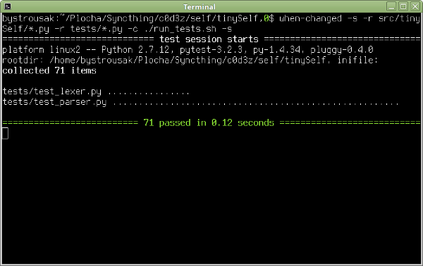
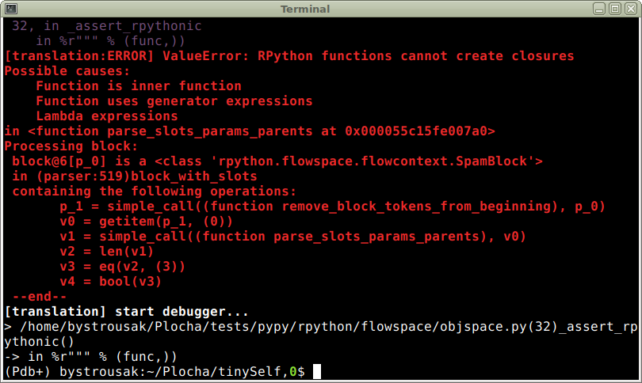

{kind=link}

Parser parsuje, testy procházejí a svítí zeleně. Co víc si přát. Snad jen .. Ve všemožných článcích psali, že je dobré provádět časté testy, zda jde kód přeložit RPythonem. Během psaní parseru to nemělo smysl, protože parser je obtížně dělitelný kus a moje soustředění mířilo směrem k projití unittesty. Řešit u toho ještě datové typy a všechna omezení RPythonu mi přišlo jako zbytečný masochismus, který by mohl způsobit, že projekt nikdy nedodělám.
Normální unittesty pouštím scriptem run_tests.sh, který obsahuje následující kód:
#! /usr/bin/env bash export PYTHONPATH="src/:$PYTHONPATH" python2 -m py.test tests $@
Ten je následně pouštěn scriptem when-changed, jenž detekuje změny na disku a při každé úpravě zdrojových kódů pustí testy:
when-changed -s -r src/tinySelf/*.py -r tests/*.py -c ./run_tests.sh -s
Parametr -s zachycuje stdout z testů.

RPython takto pouštět nemůžu, neboť se nejedná o unittesty, ale spíš test kompilace trvající na mém domácím počítači klidně minutu.
Pro RPython jsem si do začátku napsal následující scriptík run_rpython_test.sh:
#! /usr/bin/env bash $HOME/Plocha/tests/pypy/rpython/bin/rpython src/tinySelf/target.py
Jak je možné vidět, ten předpokládá, že v adresáři $HOME/Plocha/tests je naklonovaný repozitář projektu pypy. To je možné udělat například příkazem:
hg clone https://bitbucket.org/pypy/pypy
ve složce $HOME/Plocha/tests.
Repozitář je možné zkompilovat a zajistit si tak nejnovější verzi pypy. Osobně to tak ale nedělám, protože to trvá dlouho, nejnovější revize repozitáře typicky obsahuje bugy a navíc kompilace má spoustu závislostí. Proto používám pypy z repozitáře (sudo apt install pypy) a využívám jen nejnovější RPython toolkit, který je s pypy distribuovaný.
Jakmile mám pypy nainstalované, stáhnu si ještě PIP (python package manager) pro pypy (standardní funguje jen pro cpython):
curl https://bootstrap.pypa.io/get-pip.py | sudo pypy
Poté do pypy doinstaluji nejnovější verzi parsovacího balíku rply:
pypy -m pip install --user rply
V repozitáři debian based systémů se nachází balík pypy-rply, který ale nedoporučuji používat, protože může být zastaralý vůči PIPu (v době psaní článku je v debian repozitáři verze 0.7.4-3 a v pipu 0.7.5).
Pouštěný script [target.py](http://target.py) definuje vstupní kompilační bod. V něm musí být minimálně dvě funkce - target() a poté funkce která slouží jako vstupní bod spuštěného programu. V podstatě se jedná o takové meta-main() známé z C jazyků, tedy funkci určující funkci main. Mám pocit, že na linuxu se k tomu pod libc běžně používá __start.
Obsah funkce target() se spouští v době překladu a proto je možné v něm provádět různé meta-programování, například volat funkce, které vygenerují funkce, které jsou poté zkompilovány.
Osobně jsem do začátku použil jen nejjednodušší target.py:
#! /usr/bin/env python2
# -*- coding: utf-8 -*-
from rpython.jit.codewriter.policy import JitPolicy
from parser import lex_and_parse
def main(argv):
print lex_and_parse("1")
return 1
def target(driver, args):
return main, None
def jitpolicy(driver):
return JitPolicy()
def untranslated_main():
import sys
sys.exit(main(sys.argv))
if __name__ == '__main__':
untranslated_main()
Jak je vidět, jen se pustí funkce lex_and_parse("1"), tedy pokus o zparsování zdrojového kódu obsahujícího jen číslo jedna.
Pokud by vás zajímal princip fungování překladu na C kód, tak znovu doporučuji následující odkazy:
Hezky to celé shrnuje následující graf:
Ve zkratce je vytvořen flow graf kódu, který je poté projit analyzátorem datových typů, jenž se snaží jednotlivým elementům přiřadit statické datové typy. Pokud se podaří, jsou aplikovány optimizace, případně přidán JIT, vyplivnut C kód a celé je to zkompilováno pomocí normálního C kompilátoru.
To že jde o flow graf ovšem znamená, že části kódu, které nejsou volány nejsou překládány. Celé je možné si to představit jako kompilaci AST, i když ve skutečnosti se kód prvně kompiluje do pythonního bytecode a teprve ten se poté analyzuje a z něj se staví control flow graph.
Prakticky to znamená, že pokud máte v objektu metodu, kterou nejde přeložit, tak na to nepřijdete, dokud v kódu nebude někde místo, odkud se volá. Do té doby vůbec není součástí flow grafu.
První puštění testů mi samozřejmě neprošlo:

Žádné překvapení. Jak jsem psal, RPython používá silně omezenou verzi pythonu a můj kód nijak nešetří list comprehensionama, closures a dalšími „vysokoúrovňovými“ konstrukty.
Kód je nyní zapotřebí „zhloupit“ a přidat typové hinty, které RPythonu pomohou anotovat flow graph v místech, kde si je nedokáže odvodit sám.
Nyní musím vzít dynamický a relativně vyskoúrovňový python a převést ho na staticky typovaný kód, který by se psal podobně jako třeba v Javě. To vše čistě v syntaxi pythonu.
Část omezení je popsána v oficiální dokumentaci:
Mnohem lepší představu však dává článek
Mezi významná omezení patří například omezení proměnných pouze na jeden datový typ v daném scope. To znamená, že do nich nemůžete přiřadit hodnotu s jiným datovým typem, jakmile je jednou použijete. Seznamy musí být celé tvořeny z jednoho datového typu. Closures nefungují vůbec. List comprehensions fungují, ale ne úplně tak jak by člověk čekal. Generátory jsou více/méně podporovány, ale nejdou s nimi dělat různé psí kusy, jako třeba kompozice.
Otravně omezující je nutnost všech funkcí v parseru vracet stejný datový typ, resp. třídu odvozenou od stejného datového typu. rply k tomu nabízí rply.token.BaseBox, od které musí být poděděny všechny AST prvky. Navíc je však ale třeba přepsat i všechny parsovací funkce tak, aby nevracely list, dict, nebo jiné nativní typy, ale datový typ odvozený od BaseBoxu.
Proto jsem byl nucen nadefinovat třídy StrContainer, DictContainer, ListContainer a KwSlotContainer, a používat je na místech, kde jsem dříve používal prostě jen dict, nebo list. Původně jsem chtěl použít jen Container, který by udržoval obecný datový typ, ale ukázalo se, že na něj taky platí omezení a pro jednu instanci je možné použít jen jeden datový typ. Do třídy ve stylu:
class Container(object):
def __init__(self, data):
self.data = data
není možné v různých instancích uložit různé datové typy. To je pro mě jakožto dlouhodobého programátora v pythonu docela nezvyk.
Hezky je to vidět například na parsovací funkci kw_slot_definition(), která se proměnila z
@pg.production('slot_definition : kw_slot_name ASSIGNMENT expression')
def kw_slot_definition(p):
assert isinstance(p[2], Object), "Only objects are assignable to kw slots!"
slot_name = p[0][0]
parameters = p[0][1]
obj = p[2]
obj.params.extend(parameters)
return {slot_name: obj}
na
@pg.production('slot_definition : kw_slot_name ASSIGNMENT expression')
def kw_slot_definition(p):
slot_info = p[0]
obj = p[2]
assert isinstance(slot_info, KwSlotContainer)
assert isinstance(obj, Object)
obj.params.extend(slot_info.parameters)
return DictContainer({slot_info.slot_name: obj})
Za povšimnutí stojí také několik použití assert isinstance(..). V prvním případě používám assert tak, jak byl zamýšlen, tedy k ujištění se, že do funkce nepoleze datový typ jiný než objekt a pokud ano, tak vyhodím chybovou hlášku.
Ve druhém případě assert nefunguje jako příkaz pro ujištění, ale jako type hint (typová nápověda) pro RPython, který mu říká, jakého datového typu jsou dané parametry. Pokud bych ho neuvedl, došlo by v době překladu k vyhození výjimky, která může vypadat například takto:
[translation:ERROR] NoSuchAttrError:
the attribute 'params' goes here to <ClassDef 'rply.token.BaseBox'>, but it is forbidden here
v0 = getattr(obj_0, ('params'))
In <FunctionGraph of (parser:453)kw_slot_definition at 0x55b7e3841cc8>:
Happened at file src/tinySelf/parser.py line 461
slot_info = p[0]
obj = p[2]
# assert isinstance(slot_info, KwSlotContainer)
# assert isinstance(obj, Object)
==> obj.params.extend(slot_info.parameters)
return DictContainer({slot_info.slot_name: obj})
Z chyby je jasně vidět, že RPython nechápe, proč se snažím u neznámého objektu přistupovat k členské proměnné params.
Na konci funkce pak vracím DictContainer čistě jen proto, že vrácené parsované hodnoty musí být všechny stejným datovým typem, nebo jeho potomky. To je způsobeno vnitřním fungováním parseru, který jednotlivé odekorované funkce zpracovává v různých kolekcích, ve kterých nemůžou být pod RPythonem různé datové typy.
Zajímavé jsou chyby Blocked block -- operation cannot succeed, které mi jeden večer docela zamotaly hlavu. Nakonec jsem však prohledáním konference zjistil, že se jedná o chybu když RPython type annotator prvně vleze do metody objektu a ještě neprošel .__init__() metodu. Pokud je v metodě přistoupeno k členským proměnným, tak dojde chybě, jelikož anotátor neví o tom že byly definovány. Řešení je docela prosté, stačí objekt prostě předtím někde použít, aby byla o-anotována .__init__() metoda.
Výše uvedené potíže jsou jen malá část toho, s čím se člověk setká. Osobně jsem postupoval tak, že jsem celý parser až na první pravidlo a poslední parsovací funkci parse_and_lex() zakomentoval a postupně převáděl jednotlivá pravidla. Tímhle postupem mi to trvalo poměrně dlouho, ale nakonec se dostavil výsledek:
(Kompilační fraktály v původní kvalitě: https://youtu.be/A_OhtmUH830)
Příště se podíváme na návrh rozložení a reprezentace objektů v paměti před tím, než přijde na řadu psaní virtuálního stroje a kompilátoru do bytecode.